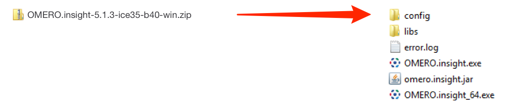
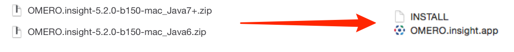
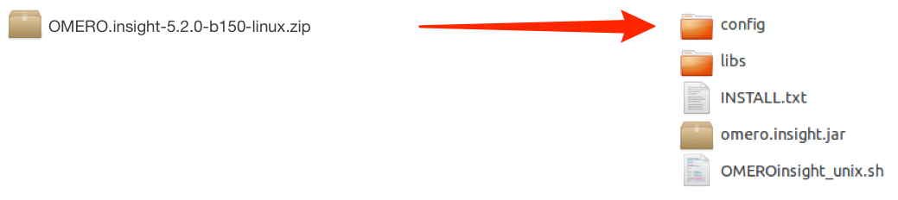
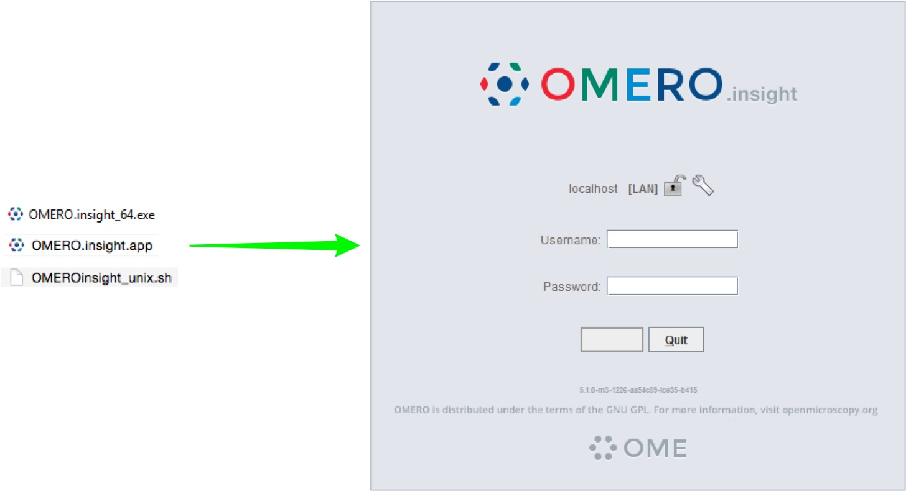

Installing
-
Download the OMERO.insight client at: https://www.openmicroscopy.org/omero/downloads

Expand OMERO.insight client archive and move it to your home directory.
Windows:
Mac OS X:
Linux:
Open the OMERO.insight client.
Note
Mac users may be blocked by a warning that OMERO.insight has been prevented from opening as it is from an unidentified developer.
Follow these instructions to adjust the security settings so OMERO.insight can run on your Mac: